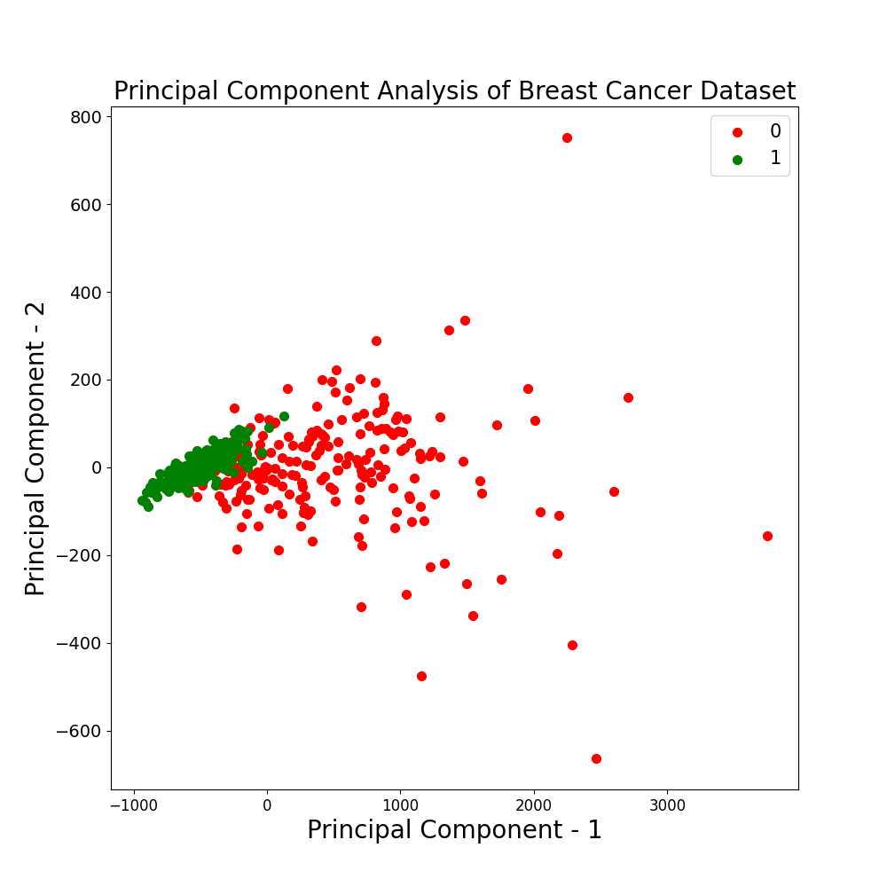

Random Forest Classification of Breast Cancer Cells
0
Breast Cancer is a type of cancer that originates in one or both of the breasts. In this sickness,
the cells replicate in an uncontrolled manner. It is the most common cancer found in women in the United States.
The dataset is composed of 569 descriptions of images from a fine needle aspirate (FNA) of a breast mass.
A FNA is a type of biobsy that can be used to diagnose breast cancer from breast tissue.
The features in the dataset describe the cell nuclei in the image. The nuclei is the "brain"
of the cell and contains important information about the reproduction the cells during mitosis.
The results of the analysis can be found in the following workbook:
Analysis Workbook
The Ranodm Forest Model was trained to classify the cells as benign or malignant with 92% accuracy.
There exists class imbalance between the Benign and Malignant cells. There are significantly more
malgignant cells, so majority class undersampling is used to balance the classes. A random set of
malignant samples are selected for the analysis, so that there is an equal number of benign and
malignant cells.
Class Imbalance
There are 30 features in the dataset, so a Principle Component Analysis (PCA) is used to select the
top 5 features and perform dimensionality reduction. The first principle component explains 98% of
the variance. The top 5 features from the component are 'worst area,' 'mean area,'
'area error,' 'worst perimeter,' and 'mean perimeter.' The classes are not linearly separaple and
there is some overlap between the benign and malignant cells. The malignant cells are very dispersed
in the lower dimension, so a non-linear model - the Random Forest - is selected to perform the binary
classification

PCA Benign and Malignant Cells
The Random Forest model is trained on the top five features. It is a supervised learning algorithm
ensemble of decision trees. The output of the trees are aggregated to find the most popular result.
Bagging, or selection of a random set of samples, is used to prevent overfitting.
ROC Curve
The model performs with an AUC score of 92 and shows a balance between the false and true positive rates
at various thresholds. The model performs with a precision of 90% and recall of 94%. It is correctly identifying
the benign and malignant cells with few false positives and false negatives.
95
11
6
100
The top 5 features from most important to least important are 'worst perimeter,' 'worst area,' 'area error,'
'mean perimeter,' 'mean area.' Most of these features are significantly important in identifying the benign cells
and play low importance in identifying malignant cells.